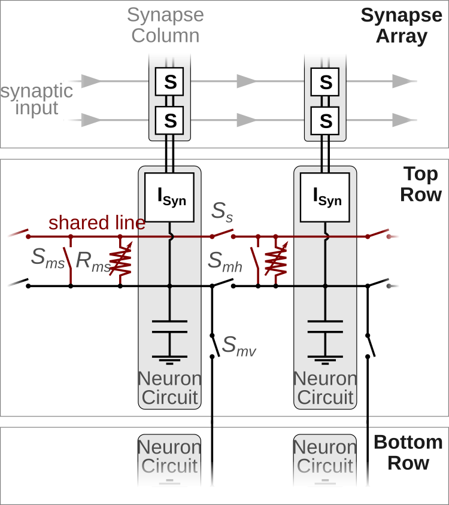
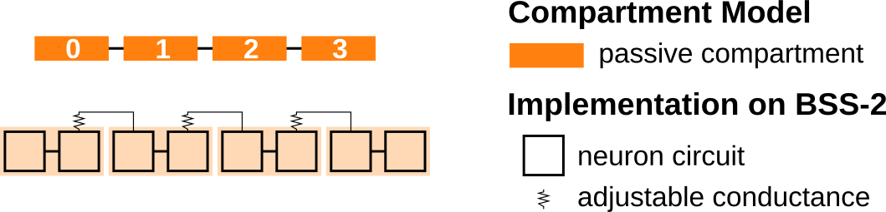

Structured Neurons
In the previous demonstrations we considered point neuron models. However, biological neurons often posses elaborate dendritic trees, which allow them to pre-process the synaptic inputs before they reach the somatic spike initiation zone near the axon initial segment. Taking dendrites as well as their passive and active properties into account can greatly enhance the computational power of neurons [1-3].
In order to investigate the features of structured neurons, BrainScaleS-2 offers the possibility to connect several neuron circuits to form multi-compartmental neuron models. The following figure shows a sketch of two neuron circuits and the electronic (not synaptic) connections they can establish.
{kind=link}
Horizontal switches \(S_{mh}\) and vertical switches \(S_{mv}\) allow to connect neighboring neuron circuits directly – they form a single, isopotential compartment. This can be useful to increase the fan-in of a single compartment as it is now connected to several columns of the synapse array or might be needed to realize certain multi-compartmental models (see the code example below).
In addition to these “membrane connections” each neuron circuit can also connect either directly (\(S_{ms}\)) or via a conductance \(R_{ms}\) to a “shared line”. This offers the possibility to connect several compartments via conductances and to form various multi-compartmental neuron models. We will demonstrate the implementation of a multi-compartmental model by the example of a compartment chain and will investigate how excitatory postsynaptic potentials propagate along the chain. The following figure displays a sketch of a chain with four compartments in the top part; in the bottom the hardware implementation is illustrated.
{kind=link}
The rest of this demo will motivate why we chose this hardware implementation and will show how this model can be emulated on the BrainScaleS-2 system. You can find more detailed information about the multi-compartmental capabilities, example configurations and experiments with structured neurons in Kaiser et al. 2021 [4].
References for further reading
Poirazi, P., Brannon, T., Mel, B.W., 2003. Pyramidal neuron as two-layer neural network. Neuron 37, 989–999. doi:10.1016/s0896-6273(03)00149-1
London, M., Häusser, M., 2005. Dendritic computation. Annu. Rev. Neurosci. 28, 503–532. doi:10.1146/annurev.neuro.28.061604.135703
Major, G., Larkum, M.E., Schiller, J., 2013. Active properties of neocortical pyramidal neuron dendrites. Annual Review of Neuroscience 36, 1–24. doi:10.1146/annurev-neuro-062111-150343
Kaiser, J., Billaudelle, S., Müller, E., Tetzlaff, C., Schemmel, J., and Schmitt, S., 2022. Emulating dendritic computing paradigms on analog neuromorphic hardware. Neuroscience. doi:10.1016/j.neuroscience.2021.08.013
Imports and Calibration
Once again we have to set some environment variables for our microscheduler first:
from _static.common.helpers import setup_hardware_client
setup_hardware_client()
We continue by importing several Python packages, which we need to perform our experiment.
%matplotlib inline
from functools import partial
from typing import List, Optional
import numpy as np
import ipywidgets as widget
import matplotlib.pyplot as plt
import quantities as pq
import pynn_brainscales.brainscales2 as pynn
from pynn_brainscales.brainscales2.morphology import create_mc_neuron, \
Compartment, SharedLineConnection
A default calibration is generated for every setup every night. We save the nightly calibration in two variables such that we can use it later when we define our neuronal network.
from _static.common.helpers import get_nightly_calibration
calib = get_nightly_calibration()
Now we can start setting up our network:
# setup PyNN and inject calibration data
pynn.setup(initial_config=calib)
Furthermore, we define some global parameters which we need for the construction of the chain and the external stimulus.
length = 4 # Number of compartments in the chain
inputs = 10 # Number of concurrent input spikes
Constructing a Compartment Chain
We will now create a chain of compartments, which are connected via conductances. Each compartment in the middle of the chain has two neighbors. Therefore, these compartments have to establish two connections via the somatic line. As a consequence each is made up of two neuron circuits: the first will connect to the somatic line via the conductance and the second via the switch.
The PyNN interface allows us to define compartments and the connections between them. Once we defined all compartments and connections, we can create a new neuron type.
assert length >= 2
compartments = []
for n_comp in range(length):
positions = [2 * n_comp, 2 * n_comp + 1]
# use direct connection to connect to the right
connect_shared_line = None if n_comp == 0 else [positions[0]]
# use resistor to connect to the right
connect_conductance = None if n_comp == (length - 1) else \
[(positions[1], 200)]
compartments.append(
Compartment(positions=positions,
label=f'comp_{n_comp}',
connect_conductance=connect_conductance,
connect_shared_line=connect_shared_line))
# close shared line between neighboring compartments
connections = []
for n_comp in range(length - 1):
# start at second circuit in first compartment
start = 2 * n_comp + 1
connections.append(
SharedLineConnection(start=start, stop=start + 1, row=0))
# create new neuron type
CompartmentChain = create_mc_neuron('CompartmentChain',
compartments=compartments,
connections=connections,
single_active_circuit=True)
# disable spiking since we want to observe the attenuation of PSPs
pop = pynn.Population(1, CompartmentChain(threshold_enable=False))
External Input and Experiment Definition
We create stimulus neurons which inject synaptic inputs in one compartment after another.
isi = 0.2 # ms (hw): time between inputs
spike_times = np.arange(length) * isi + 0.5 * isi # ms (hw)
# Inject stimulus in one compartment after another
projections = []
for n_comp, spike_time in enumerate(spike_times):
pop_in = pynn.Population(inputs, pynn.cells.SpikeSourceArray(
spike_times=[spike_time]))
# Note: the weight will be set later
synapse_type = pynn.standardmodels.synapses.StaticSynapse()
projections.append(
pynn.Projection(pop_in, pop,
pynn.AllToAllConnector(location_selector=f'comp_{n_comp}'),
synapse_type=synapse_type))
Now we define a function which runs the experiment on the BrainScaleS-2 system.
Since we use a single ADC (analog-to-digital converter) to record the membrane potential of each compartment, we have to perform length hardware runs.
def record_membrane_traces(weight: int, conductance: int) -> List:
"""
Run emulation on BSS-2 and record membrane traces of each compartment.
:param weight: Weight of stimulus projection. Value range: [0, 63].
:param conductance: Conductance between compartments. Value range
[0, 1022].
:return List of recorded membrane traces.
"""
# Set parameters
pop.set(multicompartment_i_bias_nmda=conductance)
for proj in projections:
proj.set(weight=weight)
# Run on hardware and record mebrane potentials
membrane_traces = []
for n_comp in range(length):
pop.record(['v'], locations=[f'comp_{n_comp}'])
pynn.run(length * isi)
membrane_traces.append(pop.get_data(clear=True).segments[-1].irregularlysampledsignals[0])
pop.record(None)
pynn.reset()
return membrane_traces
Furthermore, we define a function which plots the defined membrane traces.
For that purpose we create a grid of size length x length.
Each cell in this grid will contain a subplot which displays the membrane response in a single compartment to a single input.
We will change the recording site in the x-axis and the injection site on the y-axis.
def plot_membrane_traces(membrane_traces: List, old_traces: Optional[List]):
"""
Display recorded membrane traces.
Split the recorded membrane trace of each compartment and create a grid of
reponses in which the recording site changes in the horizontal direction
and the injection site in the vertical direction.
:param membrane_traces: List of recorded membrane traces of the different
compartments.
"""
length = len(membrane_traces)
fig, axs = plt.subplots(length, length, sharex=True, sharey=True,
figsize=(10,8))
def plot_single(traces: List, **kwargs):
'''
Helper function to plot membrane traces recorded in a single experiment.
'''
for injected in range(length):
for measured in range(length):
membrane_trace = traces[measured]
input_time = spike_times[injected] * pq.ms
signal = membrane_trace.time_slice(
t_start=input_time - 0.01 * pq.ms,
t_stop=input_time + 0.06 * pq.ms)
# Normalize voltage and times
signal.times = (signal.times - input_time).rescale(pq.us)
signal = signal - signal[:100].mean()
axs[injected, measured].plot(signal.times, signal, **kwargs)
plot_single(membrane_traces, c='k')
if old_traces is not None:
plot_single(old_traces, c='k', alpha=0.3)
# Hide all but one axis
for ax in np.delete(axs, -length):
ax.axis('off')
axs[-1, 0].spines['right'].set_visible(False)
axs[-1, 0].spines['top'].set_visible(False)
# Add "global" axis with annotations
ax = fig.add_subplot(111, frameon=False)
ax.tick_params(labelcolor='none', top=False, bottom=False, left=False,
right=False)
ax.minorticks_off()
ax.set_ylabel('Membrane Voltage (MADC)')
ax.set_xlabel('Hardware Time (us)')
pad = 8
ax.annotate(r'$\triangleleft$ change recording site $\triangleright$',
xy=(0.5, 1), xytext=(0, pad),
xycoords='axes fraction', textcoords='offset points',
ha='center', va='center')
ax.annotate(r'$\triangleleft$ change injection site $\triangleright$',
xy=(1, 0.5), xytext=(pad, 0),
xycoords='axes fraction', textcoords='offset points',
ha='center', va='center', rotation=270)
fig.show()
Performing the Experiment
Finally, we can execute the experiment on the BrainScaleS-2 system. For that purpose we use the functions defined in the previous section.
old_traces = None
Slider = partial(widget.IntSlider, continuous_update=False)
@widget.interact(weight=Slider(min=0, max=63, step=1, value=31),
conductance=Slider(min=0, max=1022, step=10, value=500))
def run_experiment(weight, conductance):
global old_traces
membrane_traces = record_membrane_traces(weight, conductance)
plot_membrane_traces(membrane_traces, old_traces)
old_traces = membrane_traces
{kind=link}
Questions
How does the conductance influence the attenuation of the EPSP? How does it affect the height of the EPSP in the compartment in which it was injected?
Do you see an effect due to the finite chain length?
Last but not least, we tell PyNN that we finished all our experiments. Uncomment and execute the following line once you want to finish the experiment.
# pynn.end()